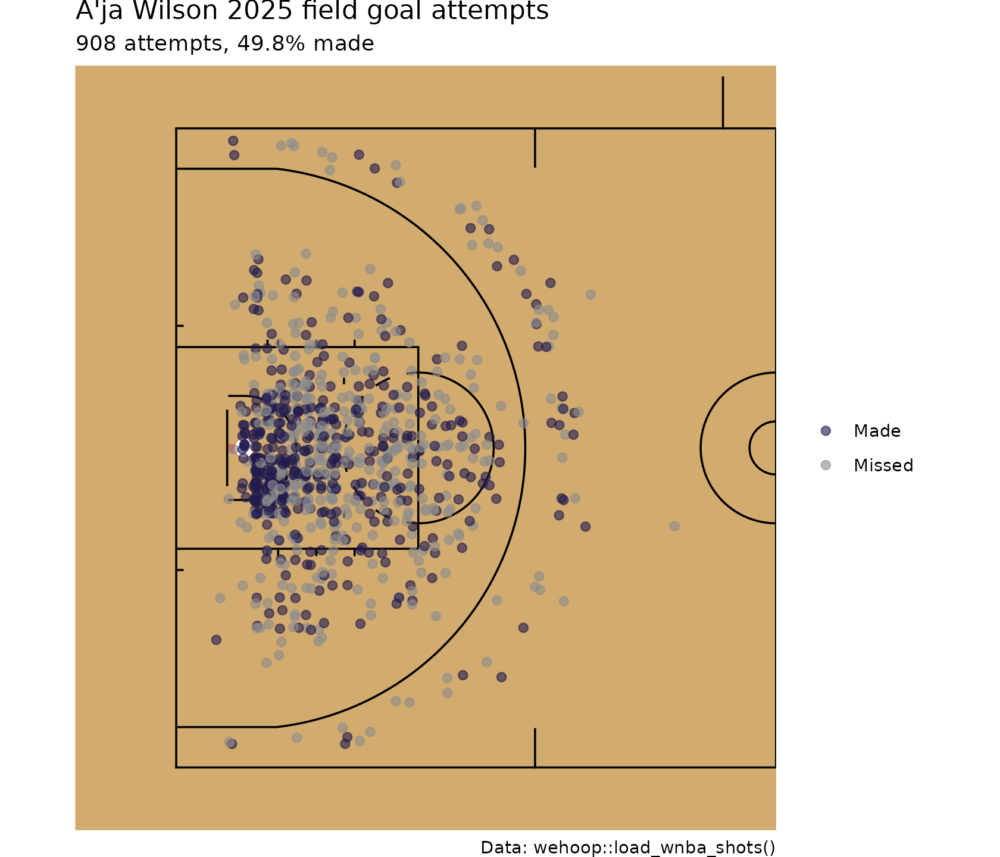
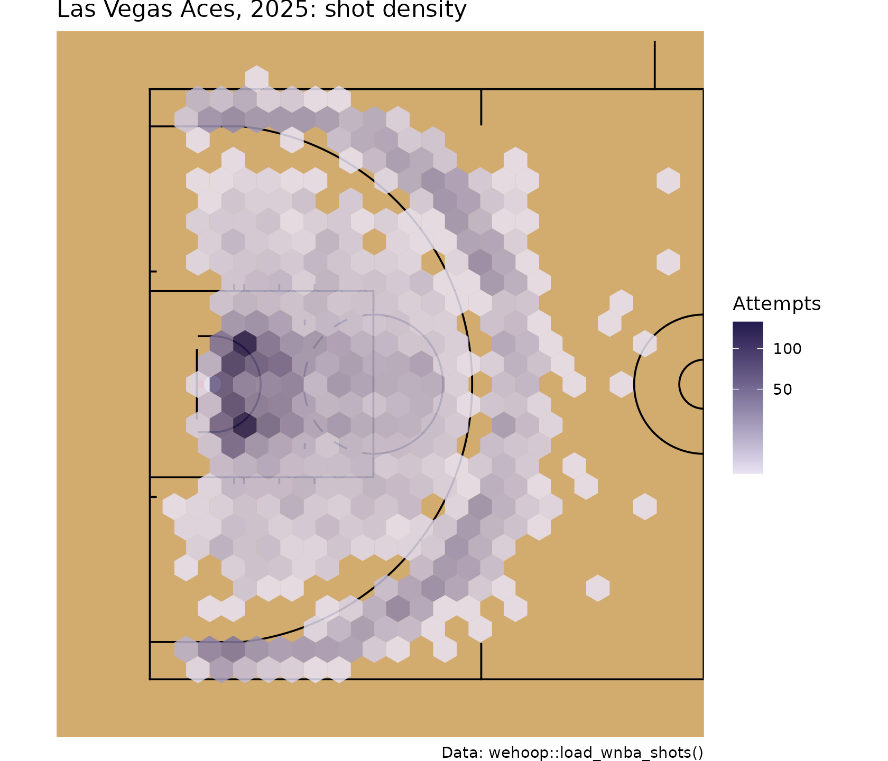
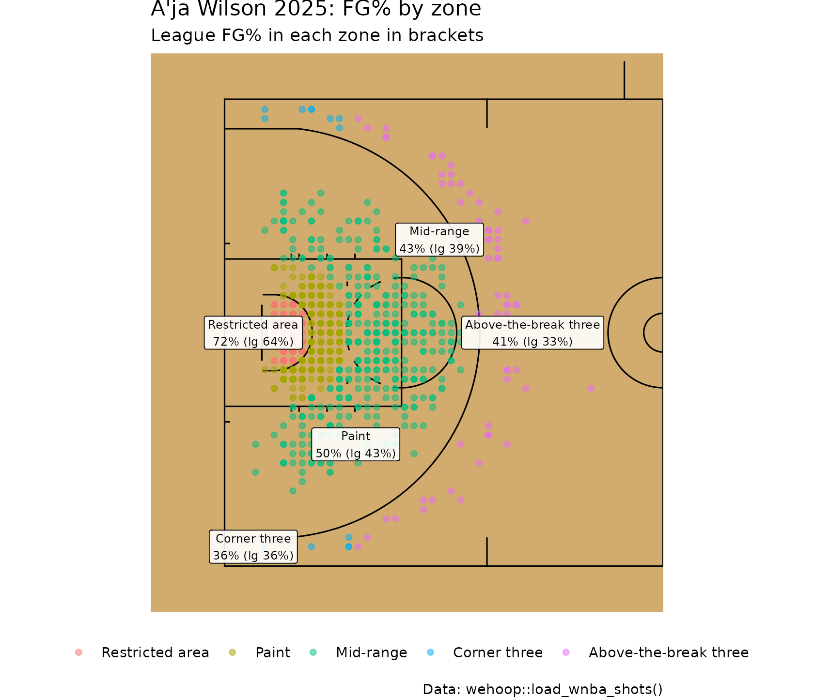
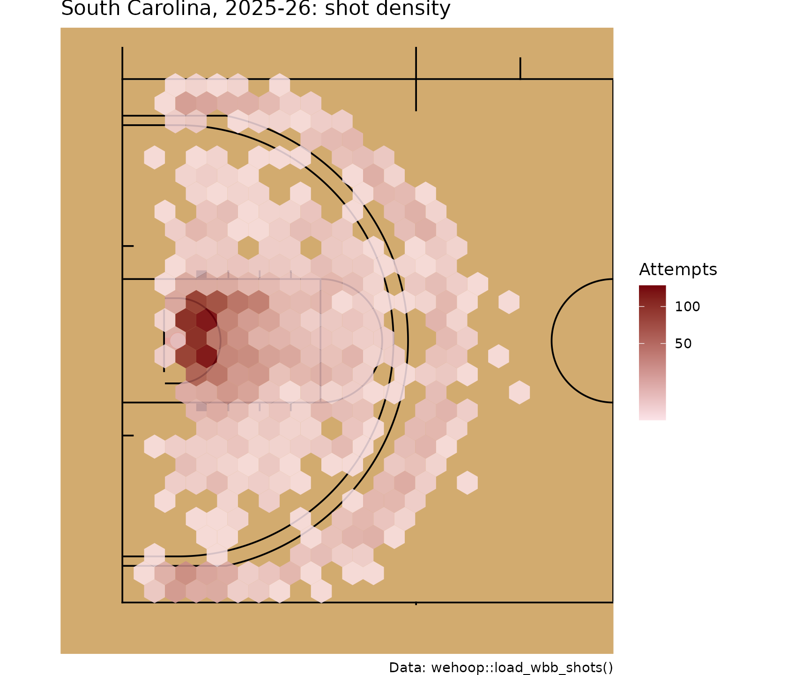
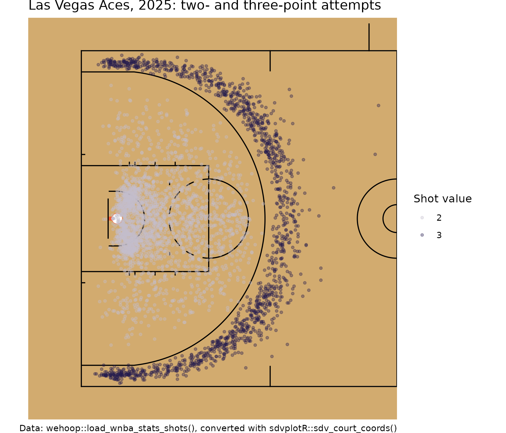
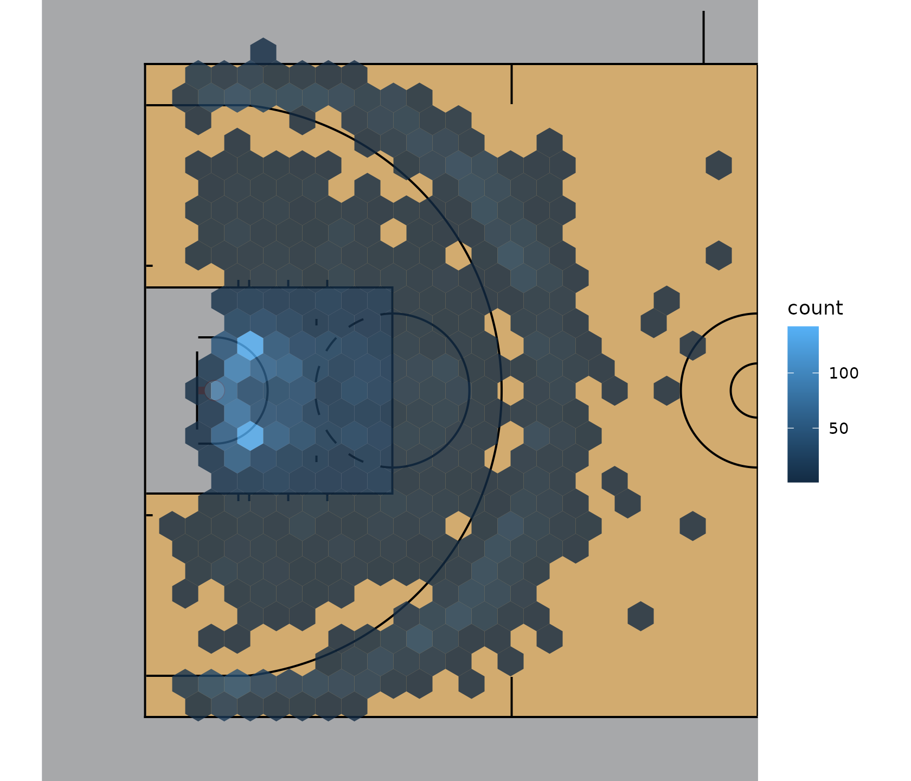
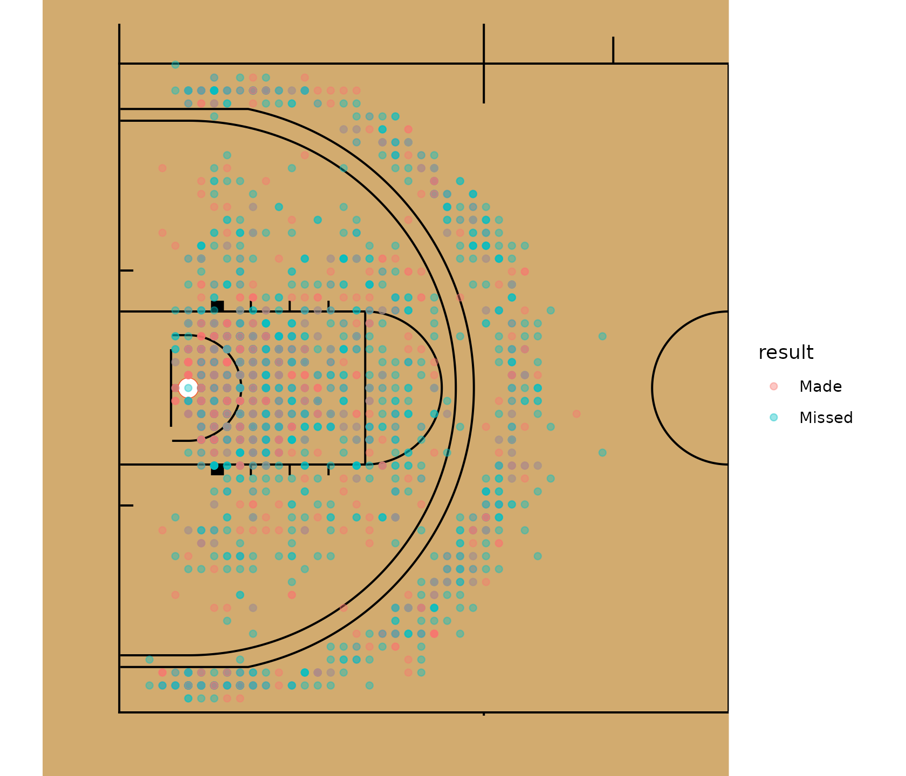

WNBA and Women's College Basketball Shot Charts in R
Saiem Gilani, Geoffery Hutchinson
Source:vignettes/articles/wnba-womens-college-basketball-shot-charts.Rmd
wnba-womens-college-basketball-shot-charts.RmdA shot chart puts every field goal attempt where it was
taken, so you can see a player’s or a team’s shot diet at a
glance. This article loads a full season of WNBA and women’s
college shots from the wehoop data releases, draws them on
a regulation court with sportyR,
and builds the standard views: makes and misses, a hexbin density map,
shot zones and field goal percentage (FG%) by zone.
If you are new to wehoop, start with Getting Started.
What you’ll learn
- Which
wehooploaders return shot locations, and which coordinate frame each uses. - How to put every shot on one basket so a half-court chart shows them all.
- How to draw makes and misses for one player, and a hexbin density map for a team.
- How to classify shots into zones and compute FG% by zone.
- How to convert WNBA Stats API shot locations with
sdvplotR::sdv_court_coords(), and dress the court in team colors withsdvplotR::sdv_surface().
Which loaders have shot locations?
| Loader | Source | Location columns | Units and origin |
|---|---|---|---|
load_wnba_shots() |
ESPN play-by-play |
coordinate_x, coordinate_y
|
Feet, center court at (0, 0), x along the court
(baskets at about ±41.75), y across it (±25) |
load_wbb_shots() |
ESPN play-by-play |
coordinate_x, coordinate_y
|
Same frame as the WNBA loader |
load_wnba_stats_shots() |
WNBA Stats API |
x_legacy, y_legacy
|
Tenths of a foot, origin at the shooter’s basket |
load_ncaa_wbb_shots() |
stats.ncaa.org play-by-play | none (shot type and outcome only) |
All three loaders with locations read pre-built season files from
GitHub releases; none of them calls a live API. The ESPN coordinates are
already in the center-court frame that
sportyR::geom_basketball() draws, so no conversion is
needed. The WNBA Stats API frame needs one, covered below.
Load a season of WNBA shots
wnba_shots <- load_wnba_shots(seasons = 2025)
wnba_shots |>
select(athlete_name_1, team_abbrev, type_text, scoring_play, score_value,
coordinate_x, coordinate_y) |>
head()
#> # A tibble: 6 × 7
#> athlete_name_1 team_abbrev type_text scoring_play score_value coordinate_x
#> <chr> <chr> <chr> <lgl> <int> <dbl>
#> 1 Kahleah Copper PHX Pullup J… FALSE 0 19.8
#> 2 NaLyssa Smith LV Layup Sh… FALSE 0 -40.8
#> 3 NaLyssa Smith LV Layup Sh… TRUE 2 -38.8
#> 4 Monique Akoa Maka… PHX Pullup J… TRUE 2 27.8
#> 5 A'ja Wilson LV Free Thr… TRUE 1 -28
#> 6 A'ja Wilson LV Free Thr… TRUE 1 -28
#> # ℹ 1 more variable: coordinate_y <dbl>The table includes free throws (type_text such as “Free
Throw - 1 of 2” in the WNBA feed, “MadeFreeThrow” in the college feed).
They are not field goal attempts and their location is the free throw
line, so drop them.
Put every shot on one basket
Teams switch baskets at halftime, so half of a team’s shots sit at
each end of the court. Fold every shot onto the left basket. Reflecting
x alone would flip the shooter’s left and right, so rotate
the court half-turn instead: negate both coordinates for shots taken at
the right-hand basket.
fold_to_left_basket <- function(shots) {
shots |>
mutate(
x = -abs(coordinate_x),
y = if_else(coordinate_x > 0, -coordinate_y, coordinate_y),
# distance in feet from the center of the left basket (41.75 ft from center court)
shot_distance = sqrt((x + 41.75)^2 + y^2),
result = if_else(scoring_play, "Made", "Missed")
)
}
wnba_fga <- fold_to_left_basket(wnba_fga)Every shot now sits on the left half, which
geom_basketball(display_range = "defense") draws.
Makes and misses for one player
The player with the most field goal attempts in the 2025 release:
top_shooter <- wnba_fga |>
count(athlete_name_1, sort = TRUE) |>
slice(1) |>
pull(athlete_name_1)
top_shooter
#> [1] "A'ja Wilson"
player_shots <- wnba_fga |> filter(athlete_name_1 == top_shooter)
geom_basketball("wnba", display_range = "defense") +
geom_point(
aes(x, y, color = result),
data = player_shots, alpha = 0.6, size = 1.8,
position = position_jitter(width = 0.3, height = 0.3, seed = 1)
) +
scale_color_manual(values = c(Made = "#221A4D", Missed = "grey55")) +
labs(
title = paste(top_shooter, "2025 field goal attempts"),
subtitle = sprintf("%d attempts, %.1f%% made",
nrow(player_shots), 100 * mean(player_shots$scoring_play)),
color = NULL,
caption = "Data: wehoop::load_wnba_shots()"
)
ESPN records locations on a one-foot grid, so many shots share a point. The small jitter keeps them from hiding each other.
Where does a team shoot from? Hexbin density
With thousands of shots, points overlap into a blob. A hexbin chart
counts shots in hexagonal cells instead. This needs the
hexbin package.
team_shots <- wnba_fga |> filter(team_abbrev == "LV")
geom_basketball("wnba", display_range = "defense") +
geom_hex(aes(x, y), data = team_shots, binwidth = c(2, 2), alpha = 0.85) +
scale_fill_gradient(low = "#e8e3f3", high = "#221A4D", trans = "sqrt") +
labs(
title = "Las Vegas Aces, 2025: shot density",
fill = "Attempts",
caption = "Data: wehoop::load_wnba_shots()"
)
Read a hexbin map by where the dark cells cluster: at the rim, along the three-point arc, or in the mid-range between them. The zone table below turns that impression into numbers.
Shot zones
A zone chart groups shots into areas with similar value. We use five zones, defined by distance from the basket:
| Zone | Rule (feet from the basket center) |
|---|---|
| Restricted area | under 4 ft |
| Paint | 4 ft to 8 ft |
| Mid-range | 8 ft out to the three-point line |
| Corner three | beyond the line in the straight corner section (within about 14 ft of the baseline, more than 21 ft from the middle of the court) |
| Above-the-break three | beyond the arc, which we take as 22 ft |
The WNBA three-point line is 22 ft 1.75 in at the top of the arc and 22 ft in the corners; NCAA women’s basketball has used the same distance since the 2021-22 season. The zone cut-offs are a simplification, so check them against the data: a made shot records its point value, so the share of made shots whose zone agrees with a two or a three tells us how well the rule works.
add_zone <- function(shots) {
shots |>
mutate(
corner = abs(y) > 21 & x <= -33,
zone = case_when(
corner ~ "Corner three",
shot_distance >= 22 ~ "Above-the-break three",
shot_distance < 4 ~ "Restricted area",
shot_distance < 8 ~ "Paint",
TRUE ~ "Mid-range"
),
zone_is_three = zone %in% c("Corner three", "Above-the-break three"),
zone = factor(zone, levels = c("Restricted area", "Paint", "Mid-range",
"Corner three", "Above-the-break three"))
)
}
wnba_fga <- add_zone(wnba_fga)
# Agreement between the zone rule and the recorded value of made shots
wnba_fga |>
filter(scoring_play) |>
summarise(agreement = mean(zone_is_three == (score_value == 3)))
#> # A tibble: 1 × 1
#> agreement
#> <dbl>
#> 1 0.999FG% by zone
league_zones <- wnba_fga |>
group_by(zone) |>
summarise(
attempts = n(),
makes = sum(scoring_play),
fg_pct = makes / attempts,
.groups = "drop"
) |>
mutate(
share_of_attempts = attempts / sum(attempts),
points_per_shot = fg_pct * if_else(grepl("three", zone), 3, 2)
)
league_zones
#> # A tibble: 5 × 6
#> zone attempts makes fg_pct share_of_attempts points_per_shot
#> <fct> <int> <int> <dbl> <dbl> <dbl>
#> 1 Restricted area 10352 6634 0.641 0.245 1.28
#> 2 Paint 7434 3180 0.428 0.176 0.856
#> 3 Mid-range 9244 3598 0.389 0.219 0.778
#> 4 Corner three 3182 1143 0.359 0.0754 1.08
#> 5 Above-the-break three 11981 3971 0.331 0.284 0.994Points per shot (FG% times the shot’s point value) is why the corner three and the restricted area are prized: they return the most per attempt.
Compare one player against the league in each zone:
# Fixed label positions, one per zone, so labels do not pile up at the rim
label_spots <- tibble(
zone = levels(wnba_fga$zone),
x = c(-44, -33, -24, -44, -14),
y = c(0, -12, 10, -23, 0)
)
player_zones <- add_zone(player_shots) |>
group_by(zone) |>
summarise(attempts = n(), fg_pct = mean(scoring_play), .groups = "drop") |>
mutate(zone = as.character(zone)) |>
left_join(label_spots, by = "zone") |>
left_join(mutate(select(league_zones, zone, league_fg = fg_pct),
zone = as.character(zone)), by = "zone") |>
mutate(label = sprintf("%s\n%.0f%% (lg %.0f%%)", zone, 100 * fg_pct, 100 * league_fg))
geom_basketball("wnba", display_range = "defense") +
geom_point(aes(x, y, color = zone), data = add_zone(player_shots),
alpha = 0.5, size = 1.4) +
geom_label(aes(x, y, label = label), data = player_zones, size = 2.6, alpha = 0.9) +
labs(
title = paste(top_shooter, "2025: FG% by zone"),
subtitle = "League FG% in each zone in brackets",
color = NULL,
caption = "Data: wehoop::load_wnba_shots()"
) +
theme(legend.position = "bottom")
The corner-three label covers both corners.
Women’s college basketball
load_wbb_shots() returns the same columns for Division
I, so every helper above works unchanged. One difference to watch: the
college feed spells shot types without spaces ("LayUpShot",
"JumpShot", "MadeFreeThrow"), which is why the
free throw filter is case-insensitive and allows for a missing space.
The 2026 season (2025-26) is large, so subset to one team.
wbb_shots <- load_wbb_shots(seasons = 2026)
nrow(wbb_shots)
#> [1] 907805
wbb_team <- wbb_shots |>
filter(team_name == "South Carolina", !grepl("free ?throw", type_text, ignore.case = TRUE)) |>
fold_to_left_basket() |>
add_zone()
nrow(wbb_team)
#> [1] 2599
geom_basketball("ncaa", display_range = "defense") +
geom_hex(aes(x, y), data = wbb_team, binwidth = c(2, 2), alpha = 0.85) +
scale_fill_gradient(low = "#fbe3e8", high = "#73000a", trans = "sqrt") +
labs(
title = "South Carolina, 2025-26: shot density",
fill = "Attempts",
caption = "Data: wehoop::load_wbb_shots()"
)
# The same zone-rule check as for the WNBA
wbb_team |>
filter(scoring_play) |>
summarise(agreement = mean(zone_is_three == (score_value == 3)))
#> # A tibble: 1 × 1
#> agreement
#> <dbl>
#> 1 0.999
wbb_team |>
group_by(zone) |>
summarise(attempts = n(), fg_pct = mean(scoring_play), .groups = "drop") |>
mutate(share_of_attempts = attempts / sum(attempts))
#> # A tibble: 5 × 4
#> zone attempts fg_pct share_of_attempts
#> <fct> <int> <dbl> <dbl>
#> 1 Restricted area 768 0.719 0.295
#> 2 Paint 568 0.484 0.219
#> 3 Mid-range 621 0.375 0.239
#> 4 Corner three 208 0.375 0.0800
#> 5 Above-the-break three 434 0.371 0.167WNBA Stats API shots and sdv_court_coords()
load_wnba_stats_shots() reads the WNBA Stats API’s shot
chart data from a GitHub release. It records the exact shot value
(shot_value), the result (shot_result) and the
league’s own shot_distance, but its locations are in the
legacy stats frame: tenths of a foot, with the origin at the shooter’s
basket. sdvplotR
converts that frame into the sportyR court frame with
sdv_court_coords(), which adds court_x and
court_y in feet with the basket at x = -41.75.
The "nba" provider is the right one here: stats.wnba.com
uses the same frame as stats.nba.com, and the WNBA court shares the NBA
court’s 94-foot length and basket position.
stats_shots <- load_wnba_stats_shots(seasons = 2025) |>
sdvplotR::sdv_court_coords(x_column = "x_legacy", y_column = "y_legacy")
stats_shots |>
select(player_name, team_tricode, action_type, shot_value, shot_distance,
x_legacy, y_legacy, court_x, court_y) |>
head()
#> # A tibble: 6 × 9
#> player_name team_tricode action_type shot_value shot_distance x_legacy
#> <chr> <chr> <chr> <int> <int> <int>
#> 1 Howard ATL Made Shot 3 24 215
#> 2 Sykes WAS Missed Shot 2 17 -151
#> 3 Jones ATL Missed Shot 3 24 -2
#> 4 Citron WAS Missed Shot 2 17 151
#> 5 Iriafen WAS Missed Shot 2 7 -72
#> 6 Sykes WAS Missed Shot 2 18 -1
#> # ℹ 3 more variables: y_legacy <int>, court_x <dbl>, court_y <dbl>
stats_team <- stats_shots |> filter(team_tricode == "LVA")
geom_basketball("wnba", display_range = "defense") +
geom_point(aes(court_x, court_y, color = factor(shot_value)),
data = stats_team, alpha = 0.35, size = 1) +
scale_color_manual(values = c(`2` = "#c2bccc", `3` = "#221A4D")) +
labs(
title = "Las Vegas Aces, 2025: two- and three-point attempts",
color = "Shot value",
caption = "Data: wehoop::load_wnba_stats_shots(), converted with sdvplotR::sdv_court_coords()"
)
Because this table carries the true shot value, you can check zone
rules exactly or use shot_value directly. Do not pass ESPN
coordinate_x/coordinate_y to
sdv_court_coords(): they are already in feet on the
center-court frame.
Team-colored courts with sdv_surface()
sdvplotR::sdv_surface() wraps
sportyR::geom_basketball() and paints the lane and apron in
a team’s colors, optionally with its logo at center court
(center_logo = TRUE). The "wnba" key draws the
WNBA court and "wbb" the NCAA court. It needs
sportyR 2.4.5 or later.
library(sdvplotR)
sdv_surface("wnba", team = "LV", display_range = "defense") +
geom_hex(aes(x, y), data = team_shots, binwidth = c(2, 2), alpha = 0.8)
# Plain NCAA court for women's college basketball
sdv_surface("wbb", display_range = "defense") +
geom_point(aes(x, y, color = result), data = wbb_team, alpha = 0.4)
Where to go next
- Advanced metrics: effective field goal percentage and true shooting put the zone values above into one number.
- WNBA Cookbook and WBB Cookbook for more recipes.
-
International
women’s basketball: most international families also have a
*_shots()function for single games. - The release shot loaders in the function reference, and the WNBA Stats API loaders.